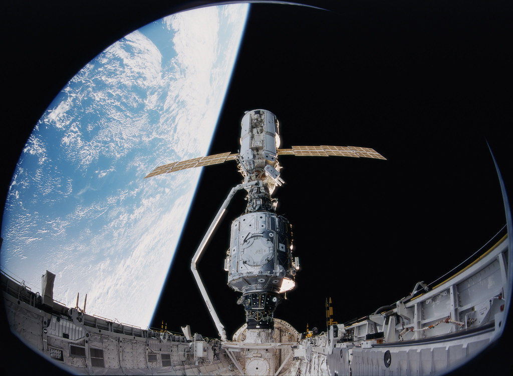
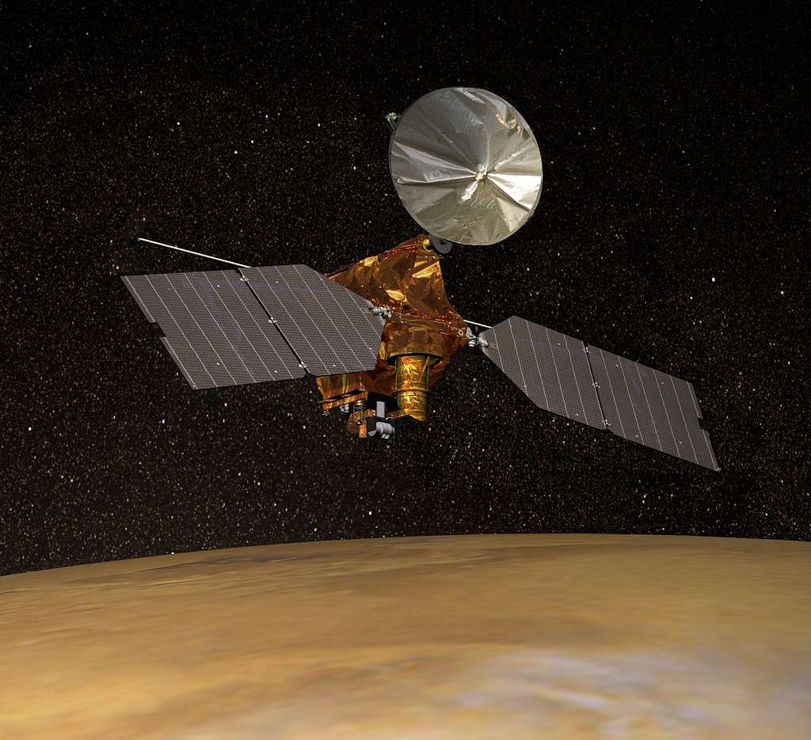

☰
˟
2000s
|
Home
Home
1960
1970
1980
1990
2000
2010
2020
1960
1970
1980
1990
2000
2010
2020
Browser no support
◀
ISS Assembly
February 7th, 2001

Spirit Rover
June 10th, 2003
Opportunity
July 7th, 2003
Genesis
August 8th, 2001
STEREO
October 25th, 2006
Mars Recon
August 12th, 2005

New Horizons
January 19th, 2006
Phoenix Lander
August 4th, 2007